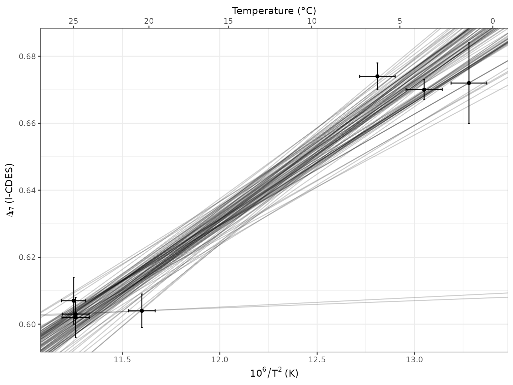
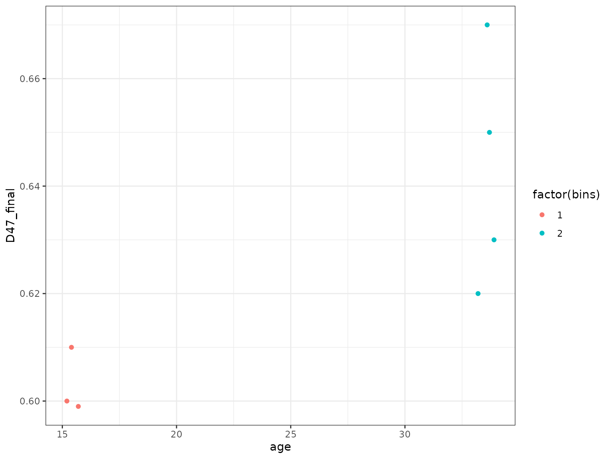
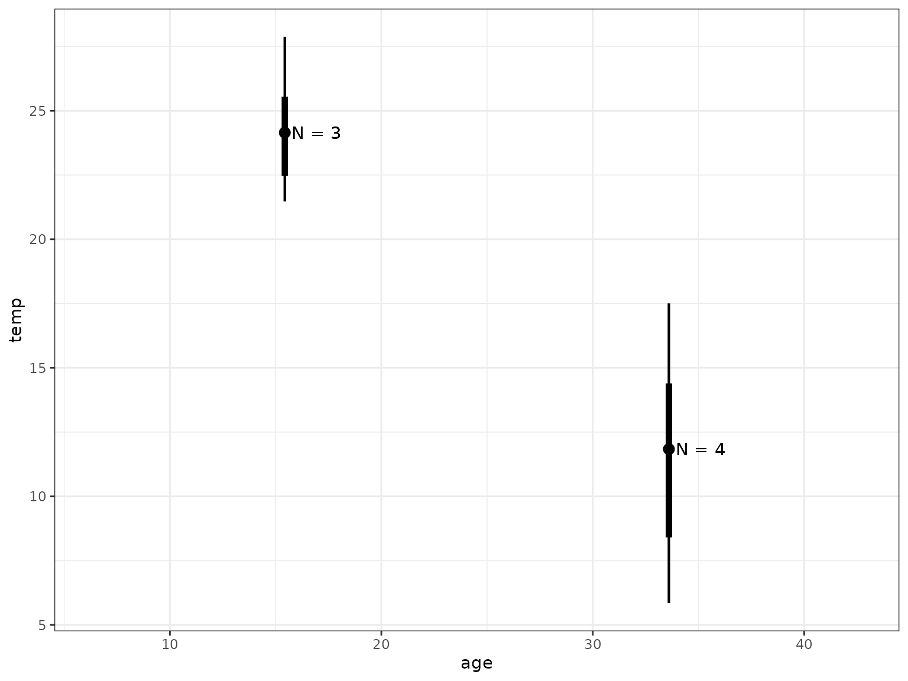

Bootstraped Clumped Isotope Calibration
bootstrapped_clumped_calibration.RmdThis vignette shows you how to:
- Calculate a bootstrapped York regression for your clumped isotope calibration dataset.
- Apply this calibration to a set of sample replicates, with propagated calibration uncertainty.
library(dplyr)
#>
#> Attaching package: 'dplyr'
#> The following objects are masked from 'package:stats':
#>
#> filter, lag
#> The following objects are masked from 'package:base':
#>
#> intersect, setdiff, setequal, union
library(tibble)
library(ggplot2)
library(ggdist)
theme_set(theme_bw())
library(clumpedcalib)
set.seed(123)load calibration data and calculate bootstrapped York regression
Here I show this with a very small artificial set of calibration data. Be sure to replace with your own!
The column names must be identical to X,
D47, sd_X, and sd_D47.
raw <- tibble::tribble(
~ X, ~ D47, ~ sd_X, ~ sd_D47,
11.25,0.607,0.062,0.007,
11.26,0.602,0.070,0.006,
11.26,0.603,0.069,0.005,
11.60,0.604,0.068,0.005,
12.81,0.674,0.091,.004,
13.28,0.672,0.092,0.012,
13.05,0.670,0.093,0.003,
)
# or if you have your data saved as an CSV
## raw <- readr::read_csv("dat/example_calib.csv",
## col_names = c("X", "D47", "sd_X", "sd_D47"))
# this is very much a toy example with only 100 bootstraps!
calib <- clumped_calib_boot(raw, Nsim = 100) #|>
# for the real deal, increase Nsim to something like 1e5 and save the results
# for re-use
## readr::write_csv(glue::glue("calib_clumped_boot.csv"))
# then you can read these stored results like so:
## calib <- readr::read_csv("calib_clumped_boot.csv")
raw |>
ggplot(aes(x = X, y = D47)) +
labs(x = 10^6 / T^2 ~ "(K)", y = Delta[47] ~ "(I-CDES)") +
scale_x_continuous(sec.axis = sec_axis(
"Temperature (°C)",
trans = \(x) sqrt(1e6 / x) - 273.15,
breaks = seq(0, 30, 5))) +
geom_point() +
geom_errorbar(aes(xmin = X - sd_X, xmax = X + sd_X)) +
geom_errorbar(aes(ymin = D47 - sd_D47, ymax = D47 + sd_D47)) +
# for now just draw all the lines since we're only sampling a few
# setting alpha lower allows you to overplot the draws
# don't forget to subset to just a few 100 though, otherwise it will be slow
geom_abline(aes(slope = slope, intercept = intercept),
alpha = .2, data = calib)
load sample data
I’ve come up with some fake replicate-level data.
dat <- tibble::tribble(
~ age, ~ bins, ~ d18O_PDB_vit, ~ d13C_PDB_vit, ~ D47_final, ~ outlier, ~ identifier_1, ~ broadid,
15.2,1,12,13,0.6,FALSE,"smp1","other",
15.4,1,8,9,0.61,FALSE,"smp1","other",
15.7,1,9,15,0.599,FALSE,"smp2","other",
33.2,2,12,13,0.62,FALSE,"smp3","other",
33.7,2,8,9,0.65,FALSE,"smp4","other",
33.6,2,8,14,0.67,FALSE,"smp5","other",
33.9,2,9,15,0.63,FALSE,"smp5","other",
)
# You can save your data to a CSV with the same column names and load it like so:
## dat <- readr::read_csv("fake_data.csv")
pl_raw <- dat |>
ggplot(aes(x = age, y = D47_final, colour = factor(bins))) +
geom_point()
pl_raw
calculate bootstrapped means and apply the temperature calibration
just give me the results!
This is a simple wrapper function to quickly get the end result. If you want more control, see below.
# calculate other "normal" summary stats if desired, like N
oth <- dat |>
group_by(bins) |>
summarize(n = n())
# calculate d18Osw and temp median and quantile interval
sum <- apply_calib_and_d18O_boot(data = dat,
calib = calib,
group = bins,
Nsim = 100,
output = "summary") |>
# add N back in
left_join(oth)
#> filter: no rows removed
#> filter: no rows removed
#> filter: no rows removed
#> Warning: There was 1 warning in `dplyr::mutate()`.
#> ℹ In argument: `d18Osw = d18Osw_calc(d18Occ = d18O, temp = temp, equation =
#> equation)`.
#> ℹ In group 2: `bins = 2`.
#> Caused by warning in `sqrt()`:
#> ! NaNs produced
#> Joining with `by = join_by(bins)`
# make a plot
sum |>
ggplot(aes(x = age, y = temp)) +
ggdist::geom_pointinterval(aes(ymin = temp.lower, ymax = temp.upper,
linewidth = factor(.width))) +
scale_linewidth_manual(values = c("0.68" = 9, "0.95" = 2), guide = "none") +
geom_text(aes(label = paste("N =", n)), nudge_x = 1.5)
individual functions
If you want to have more control, I recommend not using the above wrapper function, but in stead take it one step at a time:
-
filter_outliers(): What it says on the tin. -
bootstrap_means(): Calculate bootstrapped means for our sample bins. -
temp_d18Osw_calc(): Apply the temperature calibration and use the clumped-derived temperature and a d18Occ–d18Osw–temperature relationship to calculate d18Osw. -
our_summary(): Summarize by calculating the median and 68% and 95% confidence intervals of the mean.
You can overwrite filter_outliers() with your own
filtering function or comment it out if you have already cleaned up your
data. It assumes there’s a logical column outlier and a
character column broadid with samples equal to
"other".
sim <- dat |>
filter_outliers(group = bins) |>
bootstrap_means(group = bins, # specify which columns to use
age = age,
d13C = d13C_PDB_vit,
d18O = d18O_PDB_vit,
D47 = D47_final,
# obviously set Nsim way higher for real data!
Nsim = 100) |>
# you can choose several d18Occ--d18Osw--temperature equations, see `equations_supported()`.
temp_d18Osw_calc(calib = calib, equation = "KimONeil1997", Nsim = 100) |>
our_summary(group = bins)
#> filter: no rows removed
#> filter: no rows removed
#> filter: no rows removed
#> Warning: There was 1 warning in `dplyr::mutate()`.
#> ℹ In argument: `d18Osw = d18Osw_calc(d18Occ = d18O, temp = temp, equation =
#> equation)`.
#> ℹ In group 2: `bins = 2`.
#> Caused by warning in `sqrt()`:
#> ! NaNs produced